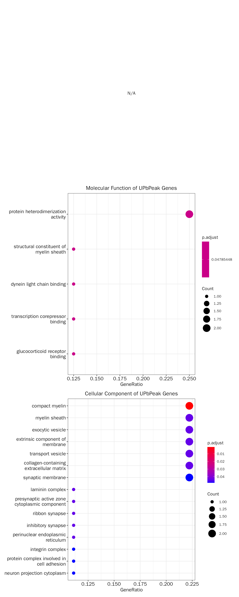
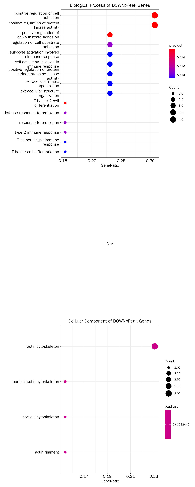

IntegrateChIPATAC.RmdIn previous vignettes, we have introduced intregrating RNA-seq with ATAC-seq and ChIP-seq separately. But we should keep in mind that ATAC-seq and ChIP-seq are highly consistent and complementary. Most TFs require open chromatin for binding to DNA recognition sites, ATAC-seq peaks generally overlap with TF ChIP-seq peaks but are often broader. Thus, TF ChIP-seq and ATAC-seq can mutually validate the quality and reliability of each other within the same experimental system.
To obtain more accurate gene regulation results, here we will integrate RNA-seq with ChIP-seq and ATAC-seq simultaneously.
The data used here contains RNA-seq and ChIP-seq datasets from RUNX represses Pmp22 to drive neurofibromagenesis:
The integration is based on results of “IntegrateChIP” vignette and “IntegrateATAC” vignette, load the results first.
# library
suppressWarnings(suppressMessages(library(DESeq2)))
suppressWarnings(suppressMessages(library(DEbPeak)))
# load RNA-seq and ChIP-seq integration results
load(file = "/home/songyabing/R/learn/tmp/DEbPeak/RNAandChIP.RData")
# load RNA-seq and ATAC-seq integration results
load(file = "/home/songyabing/R/learn/tmp/DEbPeak/RNAandATAC.RData")
debpeak.res = DEbCA(de.res = debchip.dds.results.ordered, chip.peak.res = peak.anno.df,
atac.peak.res = atac.peak.anno.df,
peak.anno.key = "Promoter", merge.key = "SYMBOL")## Differential expression analysis with DESeq2!
head(debpeak.res)## SYMBOL geneId_ChIP annotation_ChIP anno_ChIP ENSEMBL_ChIP
## 1 0610009E02Rik <NA> <NA> <NA> <NA>
## 2 0610012G03Rik <NA> <NA> <NA> <NA>
## 3 0610039K10Rik <NA> <NA> <NA> <NA>
## 4 1110002J07Rik 68488 Promoter (12-13kb) Promoter <NA>
## 5 1110004F10Rik <NA> <NA> <NA> <NA>
## 6 1110008P14Rik <NA> <NA> <NA> <NA>
## GENENAME_ChIP log2FoldChange abundance signif regulation
## 1 <NA> NA NA NA <NA>
## 2 <NA> 1.837668 59.17919 3.073773 Up_regulated
## 3 <NA> NA NA NA <NA>
## 4 RIKEN cDNA 1110002J07 gene NA NA NA <NA>
## 5 <NA> NA NA NA <NA>
## 6 <NA> 1.013546 125.76554 2.277566 Up_regulated
## Type1 geneId_ATAC annotation_ATAC anno_ATAC ENSEMBL_ATAC
## 1 <NA> 100125929 Promoter (<=1kb) Promoter ENSMUSG00000086714
## 2 UP 106264 Promoter (<=1kb) Promoter ENSMUSG00000107002
## 3 <NA> 68386 Promoter (<=1kb) Promoter ENSMUSG00000058812
## 4 ChIP 68488 Promoter (15-16kb) Promoter <NA>
## 5 <NA> 56372 Promoter (<=1kb) Promoter ENSMUSG00000030663
## 6 UP <NA> <NA> <NA> <NA>
## GENENAME_ATAC Type geneId
## 1 RIKEN cDNA 0610009E02 gene ATAC 100125929
## 2 RIKEN cDNA 0610012G03 gene UPbATAC 106264
## 3 RIKEN cDNA 0610039K10 gene ATAC 68386
## 4 RIKEN cDNA 1110002J07 gene ChIPbATAC 68488
## 5 RIKEN cDNA 1110004F10 gene ATAC 56372
## 6 <NA> UP <NA>
# DE and ChIP venn plot
debpeak.plot = PlotDEbPeak(debpeak.res, peak.type = "Peak", show_percentage=FALSE)
debpeak.plotThere are five categories for users to choose to perform functional enrichment: ChIP, ATAC, UP, DOWN, ChIPbATAC, UPbChIP, DOWNbChIP, UPbPeak, DOWNbPeak, UPbATAC, DOWNbATAC. Here, we will use DOWNbPeak and UPbPeak as examples.
# functional enrichment on direct targets
debpeak.up.fe.results = DEbPeakFE(de.peak = debpeak.res, peak.fe.key = "UPbPeak", gene.type = "ENTREZID", species="Mouse",save = F)## ## conduct ALL GO enrichment analysis on: UPbPeak## wrong orderBy parameter; set to default `orderBy = "x"`## Scale for 'y' is already present. Adding another scale for 'y', which will
## replace the existing scale.## wrong orderBy parameter; set to default `orderBy = "x"`## Scale for 'y' is already present. Adding another scale for 'y', which will
## replace the existing scale.The results:
# the result table
head(debpeak.up.fe.results[["GO"]][["table"]])## ONTOLOGY ID Description GeneRatio
## GO:0043218 CC GO:0043218 compact myelin 2/9
## GO:0043209 CC GO:0043209 myelin sheath 2/9
## GO:0070382 CC GO:0070382 exocytic vesicle 2/9
## GO:0043256 CC GO:0043256 laminin complex 1/9
## GO:0019898 CC GO:0019898 extrinsic component of membrane 2/9
## GO:0030133 CC GO:0030133 transport vesicle 2/9
## BgRatio pvalue p.adjust qvalue geneID Count
## GO:0043218 19/23271 2.265877e-05 0.001087621 0.000500878 Mbp/Pmp22 2
## GO:0043209 213/23271 2.877487e-03 0.043690148 0.020120463 Mbp/Pmp22 2
## GO:0070382 261/23271 4.282761e-03 0.043690148 0.020120463 Bsn/Syt6 2
## GO:0043256 12/23271 4.632203e-03 0.043690148 0.020120463 Pmp22 1
## GO:0019898 320/23271 6.366508e-03 0.043690148 0.020120463 Bsn/Syt6 2
## GO:0030133 339/23271 7.118989e-03 0.043690148 0.020120463 Bsn/Syt6 2
# the result plot
debpeak.up.fe.results[["GO"]][["plot"]]
# functional enrichment on direct targets
debpeak.down.fe.results = DEbPeakFE(de.peak = debpeak.res, peak.fe.key = "DOWNbPeak",
gene.type = "ENTREZID", species="Mouse",save = F)## conduct ALL GO enrichment analysis on: DOWNbPeak## wrong orderBy parameter; set to default `orderBy = "x"`## Scale for 'y' is already present. Adding another scale for 'y', which will
## replace the existing scale.## wrong orderBy parameter; set to default `orderBy = "x"`## Scale for 'y' is already present. Adding another scale for 'y', which will
## replace the existing scale.The results:
# the result table
head(debpeak.down.fe.results[["GO"]][["table"]])## ONTOLOGY ID Description
## GO:0045064 BP GO:0045064 T-helper 2 cell differentiation
## GO:0010811 BP GO:0010811 positive regulation of cell-substrate adhesion
## GO:0045785 BP GO:0045785 positive regulation of cell adhesion
## GO:0045860 BP GO:0045860 positive regulation of protein kinase activity
## GO:0042832 BP GO:0042832 defense response to protozoan
## GO:0010810 BP GO:0010810 regulation of cell-substrate adhesion
## GeneRatio BgRatio pvalue p.adjust qvalue
## GO:0045064 2/13 17/23328 3.880421e-05 0.01212719 0.006013313
## GO:0010811 3/13 128/23328 4.433038e-05 0.01212719 0.006013313
## GO:0045785 4/13 435/23328 7.460788e-05 0.01212719 0.006013313
## GO:0045860 4/13 440/23328 7.798836e-05 0.01212719 0.006013313
## GO:0042832 2/13 36/23328 1.786843e-04 0.01717888 0.008518210
## GO:0010810 3/13 214/23328 2.034275e-04 0.01717888 0.008518210
## geneID Count
## GO:0045064 Bcl3/Il4ra 2
## GO:0010811 Col8a1/Fbln2/Sdc4 3
## GO:0045785 Col8a1/Fbln2/Il4ra/Sdc4 4
## GO:0045860 Akap13/Ccnd1/Ern1/Sdc4 4
## GO:0042832 Bcl3/Il4ra 2
## GO:0010810 Col8a1/Fbln2/Sdc4 3
# the result plot
debpeak.down.fe.results[["GO"]][["plot"]]
## R version 4.0.3 (2020-10-10)
## Platform: x86_64-conda-linux-gnu (64-bit)
## Running under: CentOS Linux 7 (Core)
##
## Matrix products: default
## BLAS/LAPACK: /home/softwares/anaconda3/envs/r4.0/lib/libopenblasp-r0.3.12.so
##
## locale:
## [1] LC_CTYPE=zh_CN.UTF-8 LC_NUMERIC=C
## [3] LC_TIME=zh_CN.UTF-8 LC_COLLATE=zh_CN.UTF-8
## [5] LC_MONETARY=zh_CN.UTF-8 LC_MESSAGES=zh_CN.UTF-8
## [7] LC_PAPER=zh_CN.UTF-8 LC_NAME=C
## [9] LC_ADDRESS=C LC_TELEPHONE=C
## [11] LC_MEASUREMENT=zh_CN.UTF-8 LC_IDENTIFICATION=C
##
## attached base packages:
## [1] stats4 stats graphics grDevices utils datasets methods
## [8] base
##
## other attached packages:
## [1] org.Mm.eg.db_3.12.0 AnnotationDbi_1.52.0
## [3] DEbPeak_0.9.0 DESeq2_1.30.1
## [5] SummarizedExperiment_1.20.0 Biobase_2.50.0
## [7] MatrixGenerics_1.2.1 matrixStats_0.58.0
## [9] GenomicRanges_1.42.0 GenomeInfoDb_1.26.7
## [11] IRanges_2.24.1 S4Vectors_0.28.1
## [13] BiocGenerics_0.42.0
##
## loaded via a namespace (and not attached):
## [1] rsvd_1.0.3
## [2] ggvenn_0.1.9
## [3] apeglm_1.12.0
## [4] Rsamtools_2.6.0
## [5] rsvg_2.1
## [6] foreach_1.5.1
## [7] rprojroot_2.0.2
## [8] crayon_1.4.1
## [9] V8_3.4.2
## [10] MASS_7.3-53.1
## [11] nlme_3.1-152
## [12] backports_1.2.1
## [13] sva_3.38.0
## [14] GOSemSim_2.25.0
## [15] rlang_1.0.3
## [16] XVector_0.30.0
## [17] readxl_1.3.1
## [18] irlba_2.3.5
## [19] limma_3.46.0
## [20] GOstats_2.56.0
## [21] BiocParallel_1.24.1
## [22] rjson_0.2.20
## [23] bit64_4.0.5
## [24] glue_1.6.2
## [25] DiffBind_3.0.15
## [26] mixsqp_0.3-43
## [27] pheatmap_1.0.12
## [28] parallel_4.0.3
## [29] DEFormats_1.18.0
## [30] base64url_1.4
## [31] tcltk_4.0.3
## [32] DOSE_3.23.2
## [33] haven_2.3.1
## [34] tidyselect_1.1.0
## [35] rio_0.5.27
## [36] XML_3.99-0.6
## [37] tidyr_1.1.3
## [38] ggpubr_0.4.0
## [39] GenomicAlignments_1.26.0
## [40] xtable_1.8-4
## [41] magrittr_2.0.1
## [42] evaluate_0.14
## [43] ggplot2_3.3.5
## [44] cli_3.3.0
## [45] zlibbioc_1.36.0
## [46] hwriter_1.3.2
## [47] rstudioapi_0.13
## [48] bslib_0.3.1
## [49] GreyListChIP_1.22.0
## [50] fastmatch_1.1-3
## [51] BiocSingular_1.6.0
## [52] xfun_0.30
## [53] askpass_1.1
## [54] clue_0.3-59
## [55] gson_0.0.9
## [56] cluster_2.1.1
## [57] caTools_1.18.2
## [58] tidygraph_1.2.0
## [59] tibble_3.1.0
## [60] ggrepel_0.9.1
## [61] Biostrings_2.58.0
## [62] png_0.1-7
## [63] withr_2.4.1
## [64] bitops_1.0-6
## [65] ggforce_0.3.3
## [66] RBGL_1.66.0
## [67] plyr_1.8.6
## [68] cellranger_1.1.0
## [69] GSEABase_1.52.1
## [70] pcaPP_2.0-1
## [71] dqrng_0.2.1
## [72] coda_0.19-4
## [73] pillar_1.5.1
## [74] gplots_3.1.1
## [75] GlobalOptions_0.1.2
## [76] cachem_1.0.4
## [77] GenomicFeatures_1.42.2
## [78] fs_1.5.0
## [79] GetoptLong_1.0.5
## [80] clusterProfiler_4.7.1
## [81] DelayedMatrixStats_1.12.3
## [82] vctrs_0.4.1
## [83] ellipsis_0.3.2
## [84] generics_0.1.0
## [85] plot3D_1.4
## [86] tools_4.0.3
## [87] foreign_0.8-81
## [88] NOISeq_2.34.0
## [89] munsell_0.5.0
## [90] tweenr_1.0.2
## [91] fgsea_1.16.0
## [92] DelayedArray_0.16.3
## [93] fastmap_1.1.0
## [94] compiler_4.0.3
## [95] abind_1.4-5
## [96] rtracklayer_1.50.0
## [97] TxDb.Hsapiens.UCSC.hg19.knownGene_3.2.2
## [98] GenomeInfoDbData_1.2.4
## [99] gridExtra_2.3
## [100] edgeR_3.32.1
## [101] lattice_0.20-45
## [102] ggnewscale_0.4.7
## [103] AnnotationForge_1.32.0
## [104] utf8_1.2.1
## [105] dplyr_1.0.5
## [106] BiocFileCache_1.14.0
## [107] jsonlite_1.7.2
## [108] scales_1.1.1
## [109] graph_1.68.0
## [110] carData_3.0-4
## [111] sparseMatrixStats_1.2.1
## [112] genefilter_1.72.1
## [113] car_3.0-11
## [114] doParallel_1.0.16
## [115] latticeExtra_0.6-29
## [116] brew_1.0-6
## [117] checkmate_2.0.0
## [118] rmarkdown_2.14
## [119] openxlsx_4.2.3
## [120] pkgdown_1.6.1
## [121] cowplot_1.1.1
## [122] textshaping_0.1.2
## [123] forcats_0.5.1
## [124] downloader_0.4
## [125] BSgenome_1.58.0
## [126] igraph_1.3.4
## [127] survival_3.2-10
## [128] numDeriv_2016.8-1.1
## [129] yaml_2.2.1
## [130] plotrix_3.8-2
## [131] systemfonts_1.0.1
## [132] ashr_2.2-47
## [133] SQUAREM_2021.1
## [134] htmltools_0.5.2
## [135] memoise_2.0.0
## [136] VariantAnnotation_1.36.0
## [137] locfit_1.5-9.4
## [138] graphlayouts_0.7.1
## [139] batchtools_0.9.15
## [140] PCAtools_2.2.0
## [141] viridisLite_0.4.0
## [142] digest_0.6.27
## [143] rrcov_1.7-0
## [144] assertthat_0.2.1
## [145] rappdirs_0.3.3
## [146] emdbook_1.3.12
## [147] RSQLite_2.2.5
## [148] amap_0.8-18
## [149] yulab.utils_0.0.4
## [150] misc3d_0.9-1
## [151] data.table_1.14.2
## [152] blob_1.2.1
## [153] ragg_0.4.0
## [154] labeling_0.4.2
## [155] splines_4.0.3
## [156] ggupset_0.3.0
## [157] RCurl_1.98-1.3
## [158] broom_0.7.5
## [159] hms_1.0.0
## [160] colorspace_2.0-0
## [161] BiocManager_1.30.16
## [162] shape_1.4.6
## [163] sass_0.4.1
## [164] Rcpp_1.0.9
## [165] mvtnorm_1.1-2
## [166] circlize_0.4.15
## [167] enrichplot_1.10.2
## [168] fansi_0.4.2
## [169] truncnorm_1.0-8
## [170] ChIPseeker_1.33.0.900
## [171] R6_2.5.0
## [172] grid_4.0.3
## [173] lifecycle_1.0.0
## [174] ShortRead_1.48.0
## [175] zip_2.1.1
## [176] curl_4.3
## [177] ggsignif_0.6.3
## [178] jquerylib_0.1.3
## [179] robustbase_0.95-0
## [180] DO.db_2.9
## [181] Matrix_1.3-3
## [182] qvalue_2.22.0
## [183] desc_1.3.0
## [184] RColorBrewer_1.1-2
## [185] iterators_1.0.13
## [186] stringr_1.4.0
## [187] DOT_0.1
## [188] ggpie_0.2.1
## [189] beachmat_2.6.4
## [190] polyclip_1.10-0
## [191] biomaRt_2.46.3
## [192] purrr_0.3.4
## [193] shadowtext_0.0.9
## [194] gridGraphics_0.5-1
## [195] mgcv_1.8-34
## [196] ComplexHeatmap_2.13.1
## [197] openssl_1.4.3
## [198] patchwork_1.0.0
## [199] bdsmatrix_1.3-4
## [200] codetools_0.2-18
## [201] invgamma_1.1
## [202] GO.db_3.12.1
## [203] gtools_3.8.2
## [204] prettyunits_1.1.1
## [205] dbplyr_2.1.1
## [206] gtable_0.3.0
## [207] DBI_1.1.1
## [208] highr_0.8
## [209] ggfun_0.0.6
## [210] httr_1.4.2
## [211] KernSmooth_2.23-18
## [212] stringi_1.5.3
## [213] progress_1.2.2
## [214] reshape2_1.4.4
## [215] farver_2.1.0
## [216] annotate_1.68.0
## [217] viridis_0.6.1
## [218] Rgraphviz_2.34.0
## [219] xml2_1.3.2
## [220] bbmle_1.0.24
## [221] systemPipeR_1.24.3
## [222] boot_1.3-28
## [223] geneplotter_1.68.0
## [224] ggplotify_0.1.0
## [225] Category_2.56.0
## [226] DEoptimR_1.0-11
## [227] bit_4.0.4
## [228] scatterpie_0.1.7
## [229] jpeg_0.1-8.1
## [230] ggraph_2.0.5
## [231] pkgconfig_2.0.3
## [232] rstatix_0.7.0
## [233] knitr_1.37